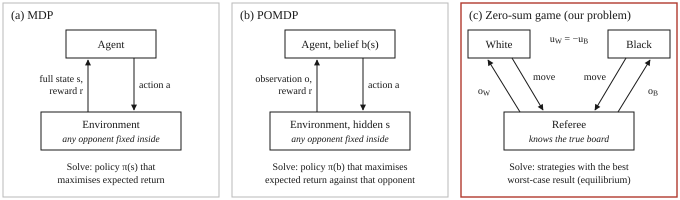
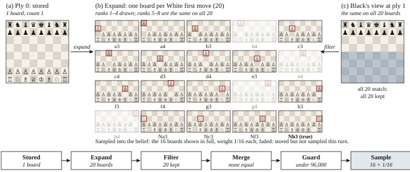
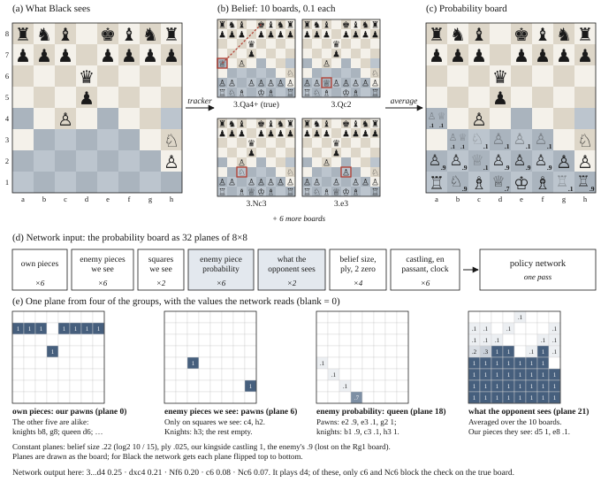
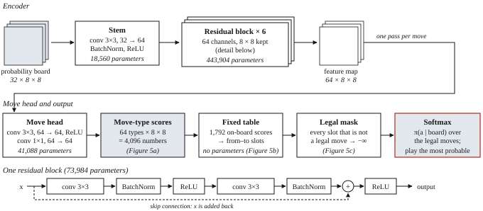
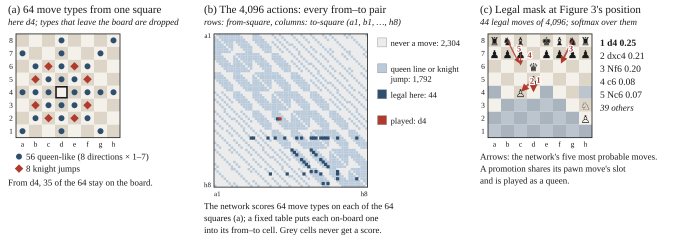
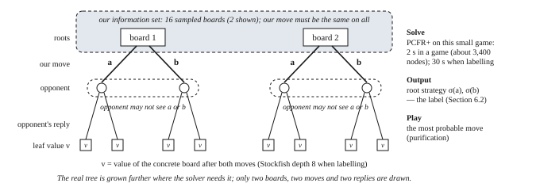
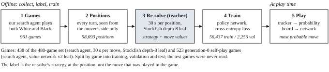

CS4246/CS5446 Reinforcement Learning and Sequential Decision Making — Project Report
Abstract. Obscuro plays Fog of War chess at a superhuman level without learning anything: each move is a new search, seeded only by the previous move's strategy, with a full-information engine valuing concrete boards. Its authors name learned evaluation as the next step, but learning cannot simply replace this search, because in imperfect-information games a value depends on both players' beliefs — ReBeL conditions it on the public belief state, which here spans about 1018 states. A strategy, by contrast, is a function of the player's own information set alone. We therefore encode that set as a probability board — what the player sees, plus on every unseen square the probability of each enemy piece — and train a policy network on 58,693 positions labelled by an Obscuro-style solver. The probabilities matter (validation regret 0.091, against 0.121 without them). The policy plays in a few milliseconds per move and improves with data, but loses 1–19 to a third-party Obscuro reimplementation.
Fog of War chess is chess in which each player sees only the squares their own pieces could move to; there is no check, and a game ends when a king is captured. It is a two-player zero-sum game with imperfect information, and a large one: a player's set of indistinguishable positions often exceeds 106 [3]. Obscuro [3], the first superhuman agent for it, scored 85.1% against the previous best agent (ZS21 [2], 1,000 games), 97% against 100 human players and 16–4 against the top-ranked player on chess.com, without any learning: every move is a new search of about a million nodes, with Stockfish valuing each concrete board at the leaves.
We ask whether the knowledge Obscuro recomputes at every move can be learned once and reused. Our contributions are: (i) the probability board, a one-picture encoding of the player's own information set (Section 4); (ii) a policy network trained on 58,693 positions labelled by an Obscuro-style solver (Sections 5–6); and (iii) comparisons with a greedy bot, reinforcement-learning (PPO) baselines with and without the belief, and a third-party Obscuro reimplementation (Sections 8.1–8.3).
The game. Players i ∈ {White, Black} alternate moves; a history h is the move sequence so far. After every ply each player receives an observation oi = Oi(h): the squares their pieces could move to, the pieces on them, and whether one of their pieces was just captured. Payoffs are zero-sum, uWhite = −uBlack ∈ {−1, 0, +1}. Player i's information set is every history consistent with what i has observed and done:
Ii(h) = { h′ : Oi(h′≤t) = Oi(h≤t) for every ply t, and i's own moves in h′ equal those in h } (1)
A behavioural strategy σi maps each information set to a distribution over its legal moves A(I); a belief bi(h | I) is a distribution over the set.

Figure 1. Three problem types. (a) MDP: the agent sees the full state and maximises expected return; any opponent is fixed. (b) POMDP: the agent sees an observation and keeps a belief; the opponent is still fixed. (c) Fog of War chess: each player gets its own observation, only the referee knows the board, the payoffs are zero-sum, and the opponent plays to beat us, so we seek strategies with the best worst-case result.
Why not a POMDP. If the opponent's strategy were fixed and known, it would be part of the environment and the problem a POMDP (Figure 1b); the QMDP approximation [9] would then value a move by averaging full-information values over the belief, Q(b, a) ≈ Σh b(h) Qfull(h, a). Here the opponent is neither fixed nor known, and a strategy optimal against one opponent can be exploited by another, so we treat the problem as a game (Figure 1c).
Why learning is hard. In imperfect-information games a position's value depends on both players' beliefs, so ReBeL [4] learns values over public belief states, distributions over the common-knowledge set of histories. In Fog of War chess that set reaches about 1018 states [3, App. E.1], which is why Obscuro values its leaves on concrete boards with a full-information engine.
The opening. A strategy, unlike a value, depends only on the player's own information set, so it can be learned without public beliefs:
πθ(a | enc(Ii)) ≈ σiteacher(a | Ii) (2)
where enc encodes the information set (Section 4) and the teacher is a solver (Section 6). The best action still depends on what the opponent believes about us; the policy learns that only implicitly, through its labels.
Obscuro keeps every position consistent with its observations, samples a few hundred, and builds a knowledge-limited subgame around them [2, 3]. It grows the subgame one-sidedly, solves it with PCFR+ [6] inside a gadget blending Resolve [10] and Maxmargin [11], plays the purified last iterate [7], and values the frontier with Stockfish at depth 1: about 1.07 million nodes and 10.7 plies in a 5-second move, on CPUs.
In its ablations, replacing the knowledge-limited unfrozen subgame with the earlier variant costs 27 points and removing purification 15. Its guarantees are partial (convergence only within the expanded tree, last-iterate convergence conjectured, subgame solving not safe in the worst case), so its case is empirical.
Its authors list four limitations [3, Sec. 5]:
Within a game it reuses only the previous move's strategy; nothing carries across games. We take its design as our teacher.
Tracking. Each player's tracker keeps the exact set of histories consistent with its observations (equation 1; Figure 2), as a graph in which a board reached by several histories is stored once, with their number as its count. A guard prunes it above 96,000 distinct states, bounding the memory Obscuro spends on the whole set. Each turn the tracker samples up to 16 boards in proportion to their counts, each then weighted equally: the counting weight Obscuro also uses.

Figure 2. Black's first tracker update (White plays 1.Nh3). (a) One stored board, count 1. (b) Expand: one board per White first move (ranks 1–4 drawn; moved piece outlined; true board in bold). (c) Filter: Black sees ranks 5–8 and no White piece, as it would on all 20 boards, so all are kept; none are equal, so nothing merges, and the guard is far off. Sample: 16 of the 20 form the belief, 1/16 each; faded boards are not sampled. Counts exceed 1 later, when move orders transpose: at ply 21 of a recorded game Black stored 8,667 boards for 86,286 histories.
Encoding: the probability board. The network sees one 32 × 8 × 8 picture (Figure 3), built from four kinds of planes:

Figure 3. The probability board at 1.Nh3 d5 2.c4 Qd6 3.Qa4+, Black to move. (a) Black's view; the queen on a4 is in the fog. (b) The 10 boards that match it, one per White third move, 0.1 each; on the true board the queen attacks the king. (c) Their square-by-square average: unmoved White pieces are certain; the queen is on d1 with 0.7 and on a4, b3 or c2 with 0.1. (d) The 32 planes in groups; shaded groups come from the sampled boards. (e) Four planes with the values the network reads (for Black, flipped top to bottom), and what the other planes hold.
Does it matter? For a value network trained on the same labels, held-out board error is 0.400 from the observation alone and 0.249 from the probability board; the policy network shows the same (Section 8.2).
Architecture. A convolutional encoder (a stem and six residual blocks, 64 channels; Figure 4) reads the probability board once per move. A convolutional head scores 64 move types on every square, 56 queen-like moves and 8 knight jumps, and a fixed table places them in the 4,096 from–to slots (Figure 5), so the same weights serve every square. Illegal moves are masked before the softmax. The network has 503,552 parameters and plays its most probable legal move.

Figure 4. The policy network and the parameters of each part. The fixed table has no parameters; the mask and the softmax give the move probabilities.

Figure 5. The 4,096 actions. (a) The 64 move types from one square; from d4, 35 stay on the board. (b) The actions as a 64 × 64 grid, from-square by to-square: only 1,792 pairs are a queen line or knight jump and get a score; at the position of Figure 3 the mask leaves Black's 44 legal moves. (c) Those moves, with arrows for the network's five most probable. Promotions share their pawn move's slot and are played as a queen.
Training. Cross-entropy to the teacher's root strategy (Section 6), AdamW (learning rate 10−3, weight decay 10−4), 64 positions per batch, early stopping on validation cross-entropy, three seeds per setting.
The solver. Our search agent follows Obscuro's design at small scale: each move it builds a subgame over the 16 sampled boards (our move, then the reply), grows it one-sidedly, and solves it with PCFR+ (Figure 6). The strategy PCFR+ finds for our move is the label the network is trained on.
What it solves. A sampled, depth-two, one-sided subgame, to near-equilibrium. It models our uncertainty about the opponent's pieces (one move for all 16 boards) and the opponent's uncertainty about our move (55% of opponent nodes in a full two-ply tree share an information set with another of our moves), but not the opponent's uncertainty about our position, and its leaves are full-information values.

Figure 6. The teacher's small game at one move, drawn for two of the 16 sampled boards, two of our moves and two replies; each leaf v is the value of its concrete board (Stockfish depth 8 when labelling). PCFR+ solves the game, and its root strategy is the label.
Games. Our search agent played both colours, so every game gives positions from White's side and from Black's, each seen only through that player's own observations and tracker (Figure 7).
Labels. We re-solved the stored positions this way: 58,693 positions, 56,437 for training and 2,256 for validation. The label is the re-solve's strategy, not the move played in the game.
What the labels look like. Each label is a probability distribution over our legal moves.

Figure 7. How the training data is made: the games choose which positions are labelled, and the re-solve labels them.
Offline. A move's regret is how much less the teacher values it than its best move (value units on [−1, 1], from the re-solve's belief-weighted per-board values); top-1 is how often the network picks the teacher's best move.
Matches. The team's runner [12]: 5 s per move, at most 200 plies, alternating colours and the same seeds for every player. Score is (wins + draws/2) / games, with 95% Wilson intervals; failed games are not scored. Opponents:
Table 1 reports regret, the value the chosen move gives up against the teacher's best move (lower is better), and top-1, how often the chosen move is the teacher's best (higher is better).
| Training positions | Regret | Top-1 |
|---|---|---|
| 18,391 | 0.107 | 0.417 |
| 27,713 | 0.093 | 0.430 |
| 41,013 | 0.096 | 0.434 |
| 56,437 | 0.091 | 0.446 |
| 56,437, observation only | 0.121 | 0.406 |
Table 1. Policy network on 2,256 validation positions, mean of 3 seeds. Regret falls from 0.107 to 0.091 as the data triples.
Trained on the same positions without the sampled boards, keeping what the player sees and knows but losing the probabilities, the belief size and the opponent's view (Figure 3d), the network's regret rises from 0.091 to 0.121 (+0.030 [+0.021, +0.040]) and its top-1 falls by 0.040 [0.028, 0.053]. The policy learns from the belief, and one probability board carries it.
| Policy network vs | Games | W–D–L | Score [95%] |
|---|---|---|---|
| Greedy bot | 100 | 93–0–7 | 0.930 [0.863, 0.966] |
| PPO agent (reinforcement-learning baseline) | 99 | 37–0–62 | 0.374 [0.285, 0.472] |
| Belief-state PPO agent | 97 | 15–0–82 | 0.155 [0.096, 0.240] |
| misty v1.6 (Obscuro reimplementation) | 20 | 1–0–19 | 0.050 [0.009, 0.236] |
| For reference, other players on the same seeds: | |||
| PPO agent vs greedy bot | 100 | 95–1–4 | 0.955 [0.895, 0.981] |
| PPO agent vs misty v1.6 (misty with Stockfish 19) | 20 | 1–2–17 | 0.100 [0.028, 0.301] |
| Belief-state PPO agent vs greedy bot | 100 | 99–0–1 | 0.990 [0.946, 0.998] |
| Belief-state PPO agent vs PPO agent | 100 | 63–3–34 | 0.645 [0.547, 0.732] |
| Belief-state PPO agent vs misty v1.6 (misty with Stockfish 19) | 20 | 3–2–15 | 0.200 [0.081, 0.416] |
Table 2. Scores from the policy network's side, 5 s per move (misty 4.5 s), shared seeds. The policy network uses a few milliseconds per move (6–8 ms). Both PPO agents found short lines that beat the policy network every time, so their games hold only 77 and 50 distinct ones (37–0–40 and 15–0–35 for the policy network, each counted once) and those intervals are too narrow.
The PPO baseline, trained by self-play without belief or teacher, reaches the policy network's level (0.955 against 0.930 versus the greedy bot) and is about even with the policy network once repeated games count once; its repeatable winning lines show that a policy which always plays its most probable move can be exploited. With the belief as input, PPO is stronger still after 5 hours of training against 12.2: it beats the PPO agent 0.645 and the policy network 35–0–15 counting distinct games, its most repeated win being 1.Nf3 d5 2.c4 dxc4 3.Qa4+ Nf6 4.Qxe8, the unseen check of Figure 3. Every misty game ended by king capture (median 37 plies): a searchless policy is far from an Obscuro-style searcher.
What learning buys. From an Obscuro-style teacher, a policy over the player's own information set learns to choose moves at a few milliseconds per move from one probability board, and it improves with data. It learns neither depth nor the teacher's mixing at deeper limits, and alone it is no match for a searcher; our results suggest it is most useful inside search, as a prior to order or prune moves, which we did not build. It also inherits the teacher's blind spots: it imitates a one-sided, depth-two solver with full-information leaves, so it never sees the opponent's uncertainty about our position, and its labels are nearly pure.
Limitations. Our search uses about 1/300 of Obscuro's nodes per move (3,400 against 1.07 million). The tracker loses every consistent history in about 1 game in 10 in self-play, which fails the game. Misty is unofficial and ran with a different Stockfish from the one its author uses. All labels come from our own solver, so regret measures agreement with our teacher, not true game value.
Compute: self-play and labelling ran in part on NUS HPC Atlas (NUSREC-HPC-00001). Misty, a GPL-licensed third-party program, was reviewed before use, built from a pinned commit, and run offline in an isolated container; none of its code is in our repository.
Obscuro reaches superhuman play by search alone. A learned value cannot replace that search without public belief states, but a policy needs only the player's own information set, which the probability board compresses into one picture. That picture is what makes learning work: it lowers the imitation policy's regret from 0.121 to 0.091, and with it PPO beats PPO without it (0.645) after less than half the training. Imitating our small solver gives a cheap policy that improves with data but is matched by PPO and beaten by belief-state PPO, and no searchless policy comes close to an Obscuro-style searcher. Because the imitation policy always plays its most probable move, both PPO agents found lines that beat it every time; a learned policy should mix its moves, or serve inside a search.
[1] Fog of War chess rules as implemented by the team (rules adapter), and chess.com's Fog of War variant.
[2] B. H. Zhang and T. Sandholm. Subgame solving without common knowledge. NeurIPS 34, 2021.
[3] B. H. Zhang and T. Sandholm. General search techniques without common knowledge for imperfect-information games, and application to superhuman Fog of War chess. arXiv:2506.01242v2, 2026.
[4] N. Brown, A. Bakhtin, A. Lerer and Q. Gong. Combining deep reinforcement learning and search for imperfect-information games (ReBeL). NeurIPS 2020.
[5] D. Silver et al. A general reinforcement learning algorithm that masters chess, shogi, and Go through self-play (AlphaZero). Science, 2018.
[6] G. Farina, C. Kroer and T. Sandholm. Faster game solving via predictive Blackwell approachability: connecting regret matching and mirror descent. AAAI 2021.
[7] S. Ganzfried, T. Sandholm and K. Waugh. Strategy purification and thresholding: effective non-equilibrium approaches for playing large games. AAMAS 2012.
[8] M. Moravčík et al. DeepStack: expert-level artificial intelligence in heads-up no-limit poker. Science, 2017.
[9] M. L. Littman, A. R. Cassandra and L. P. Kaelbling. Learning policies for partially observable environments: scaling up. ICML 1995.
[10] N. Burch, M. Johanson and M. Bowling. Solving imperfect information games using decomposition. AAAI 2014.
[11] M. Moravčík, M. Schmid, K. Ha, M. Hladík and S. J. Gaukrodger. Refining subgames in large imperfect information games. AAAI 2016.
[12] Team repository: rules, trackers, evaluator study, match runner and records. github.com/Mr-Teal/CS5446_project.
[13] B. Liou. misty: a Fog of War chess engine. github.com/brianhliou/misty, commit 5ba2c31 (unofficial; not by Obscuro's authors).
[14] Stockfish (versions 14.1 and 19). stockfishchess.org.